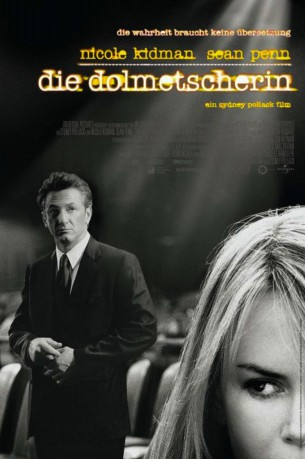
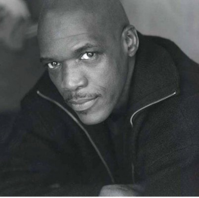
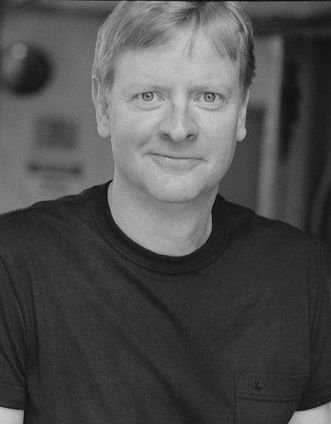
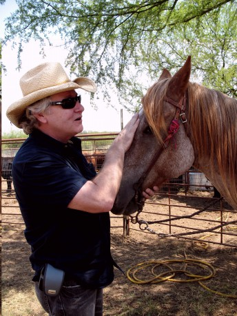

#3541 Die Dolmetscherin
Alternativ: The Interpreter
 
 IMDB-Wertung: 6.4 / 10
IMDB-Wertung: 6.4 / 10  Metascore: 0
Metascore: 0 
UN-Dolmetscherin Silvia Broome wird zufällig Zeugin von einem Mordkomplott gegen einen afrikanischen Regierungsvertreter. Hilfesuchend wendet sie sich an die US-Behörden. Der zuständige Agent Tobin Keller glaubt ihr zunächst kein Wort und beginnt nur zögerlich mit den Ermittlungen. Währenddessen sind die Killer bereits auf Silvias Spur und versuchen sie einzuschüchtern. Silvia bleibt nur eine hauchdünne Chance: Sie muss das Komplott unter Einsatz ihres Lebens selbst aufdecken und vereiteln.
Jahr: 2005
Dauer: 128 Minuten
FSK: 12
Land: England Studio: UIPTonspuren:
Untertitel: Deutsch,
Auflösung: 720p (1280x544) Größe: 4474 MB
Genre: Thriller, Mystery
Regisseur:  Sydney Pollack
Sydney Pollack
Drehbuch: Greg Iles
Soundtrack:
Darsteller:
 Nicole Kidman als Silvia Broome
Nicole Kidman als Silvia Broome Sean Penn als Tobin Keller
Sean Penn als Tobin Keller Catherine Keener als Dot Woods
Catherine Keener als Dot Woods Jesper Christensen als Nils Lud
Jesper Christensen als Nils Lud Yvan Attal als Philippe
Yvan Attal als Philippe Earl Cameron als Zuwanie
Earl Cameron als Zuwanie George Harris als Kuman-Kuman
George Harris als Kuman-Kuman- Michael Wright als Marcus
 Clyde Kusatsu als Police Chief Lee Wu
Clyde Kusatsu als Police Chief Lee Wu Eric Keenleyside als Rory Robb
Eric Keenleyside als Rory Robb- Hugo Speer als Simon Broome
- Maz Jobrani als Mo
- Yusuf Gatewood als Doug
 Curtiss Cook als Ajene Xola
Curtiss Cook als Ajene Xola-  Byron Utley als Jean Gamba
 Robert Clohessy als FBI Agent King
Robert Clohessy als FBI Agent King Terry Serpico als FBI Agent Lewis
Terry Serpico als FBI Agent Lewis David Fonteno als Phillip Ostroff
David Fonteno als Phillip Ostroff- John Knox als Fred Jameson
 David Zayas als Charlie Russell
David Zayas als Charlie Russell Christopher Evan Welch als Jonathan Williams
Christopher Evan Welch als Jonathan Williams Adrian Martinez als Roland
Adrian Martinez als Roland Tsai Chin als Luan
Tsai Chin als Luan- Francine Roussel als Isobel
 Enid Graham als Jenny
Enid Graham als Jenny- Lou Ferguson als Matoban Ambassador
- Jacques Sebag als French Ambassador
- Patrick Ssenjovu als Jad Jamal
 Chris McKinney als Forensic Officer
Chris McKinney als Forensic Officer- Martha Elliott als Woman on Bus
-  Kirby Mitchell als U.N. Security Officer
- Guy A. Fortt als U.N. Security Officer
 Ramsey Faragallah als Polygraph Technician
Ramsey Faragallah als Polygraph Technician- Leonid Citer als Russian Interpreter
- Sophie Traub als Young Silvia
 Pat Kiernan als Himself
Pat Kiernan als Himself- Margot Staub als News Reporter
- Harry Prichett als News Reporter
- Lisa Marie Palmieri als UN VIP Delegate
 James P. Anderson als Yugoslavian Delegate , uncredited
James P. Anderson als Yugoslavian Delegate , uncredited Michael Arthur als United Nations Cop , uncredited
Michael Arthur als United Nations Cop , uncredited- Anthony M. Bertram als Congressman , uncredited
-  Gerry Robert Byrne als U.N. Tourist , uncredited
 Hélène Cardona als French Interpreter , uncredited
Hélène Cardona als French Interpreter , uncredited- Wayne Chang als Secret Service Agent , uncredited
 Ty Copeman als United Nations Security , uncredited
Ty Copeman als United Nations Security , uncredited- Greg D'Agostino als U.N. Security Officer , uncredited
 Joe Remy Dolinsky als Peruvian Diplomat , uncredited
Joe Remy Dolinsky als Peruvian Diplomat , uncredited Dana Eskelson als Secret Service Agent #1 , uncredited
Dana Eskelson als Secret Service Agent #1 , uncredited- Edwin David Garcia als Papua New Guinea Delegate , uncredited
Datei: X:\2005(A-F)\Dolmetscherin, Die (2005, FSK12, 1280x544).mkv seit 27.04.2016
Festplatte: HD 2003-2004-2005(A-F)
 Es gibt insgesamt 49 Filme in der Gruppe '2005(A-F)'
Es gibt insgesamt 49 Filme in der Gruppe '2005(A-F)'